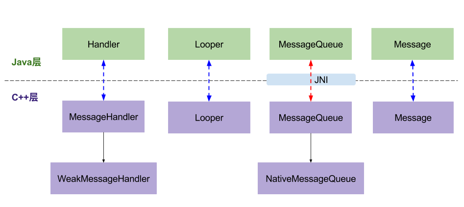

Handler 之 MessageQueue
Contents
前言
上一篇文章，我们从 Java 层探索了消息机制的原理，以及在使用中会碰到的问题，这一篇从 MessageQueue 入手，带你了解 Native 层的原理。
本文源码基于 Android10
nativeInit
在上一篇文章中提到， Java 层的 MessageQueue 的构造方法中会调用 nativeInit ，我们就从这个函数入手来一探究竟。
/frameworks/base/core/jni/android_os_MessageQueue.cpp
static jlong android_os_MessageQueue_nativeInit(JNIEnv* env, jclass clazz) {
NativeMessageQueue* nativeMessageQueue = new NativeMessageQueue();
nativeMessageQueue->incStrong(env);
return reinterpret_cast<jlong>(nativeMessageQueue);
}
在这里创建了 NativeMessageQueue 然后把它的指针返回到 Java 层，在源码里面会发现有许多类似这种把一个对象的指针返回给 Java 的做法，这样可以避免在 Java 层与 Native 层之间传递大对象，而且也很不方便，使用指针就方便多了。我们在自己写代码的时候也可以参照这样的做法，是一个不错的技巧。
NativeMessageQueue
/frameworks/base/core/jni/android_os_MessageQueue.cpp
class NativeMessageQueue : public MessageQueue, public LooperCallback {
NativeMessageQueue::NativeMessageQueue() :
mPollEnv(NULL), mPollObj(NULL), mExceptionObj(NULL) {
mLooper = Looper::getForThread(); // 从 ThreadLocal 中获取 Looper
if (mLooper == NULL) {
mLooper = new Looper(false); // 创建 Looper
Looper::setForThread(mLooper); // 把 Looper 设置给 ThreadLocal
}
}
}
这里稍微和 Java 层不一样， Java 层是从 Looper 的构造方法创建 MessageQueue ，而 Native 层是反过来，在 NativeMessageQueue 里创建 Looper 。
不过它们的套路都是一样的把 Looper 放到 ThreadLocal 中。
这里的 Looper 和 Java 不是同一个对象，所以其实是存在两个 Looper 和 MessageQueue 。
Java 层和 Native 都有一套各自的实现，它们功能是相同的。
Native 层 Looper
/system/core/libutils/Looper.cpp
Looper::Looper(bool allowNonCallbacks)
: mAllowNonCallbacks(allowNonCallbacks),
mSendingMessage(false),
mPolling(false),
mEpollRebuildRequired(false),
mNextRequestSeq(0),
mResponseIndex(0),
mNextMessageUptime(LLONG_MAX) {
// 创建用于唤醒的描述符，5.0以前使用的是管道
mWakeEventFd.reset(eventfd(0, EFD_NONBLOCK | EFD_CLOEXEC));
LOG_ALWAYS_FATAL_IF(mWakeEventFd.get() < 0, "Could not make wake event fd: %s", strerror(errno));
AutoMutex _l(mLock);
// 重建 Epoll 事件
rebuildEpollLocked();
}
rebuildEpollLocked
/system/core/libutils/Looper.cpp
void Looper::rebuildEpollLocked() {
if (mEpollFd >= 0) {
mEpollFd.reset();
}
// 创建 Epoll 描述符，用于监听其它描述符
mEpollFd.reset(epoll_create1(EPOLL_CLOEXEC));
LOG_ALWAYS_FATAL_IF(mEpollFd < 0, "Could not create epoll instance: %s", strerror(errno));
struct epoll_event eventItem;
memset(& eventItem, 0, sizeof(epoll_event));
// 设置要监听读事件
eventItem.events = EPOLLIN;
eventItem.data.fd = mWakeEventFd.get();
// 将唤醒描述符添加到 Epoll 中，用于监听
int result = epoll_ctl(mEpollFd.get(), EPOLL_CTL_ADD, mWakeEventFd.get(), &eventItem);
LOG_ALWAYS_FATAL_IF(result != 0, "Could not add wake event fd to epoll instance: %s",
strerror(errno));
for (size_t i = 0; i < mRequests.size(); i++) {
const Request& request = mRequests.valueAt(i);
struct epoll_event eventItem;
request.initEventItem(&eventItem);
// 处理自定义请求中的描述符，也一并加入到 Epoll 中进行监听。关于 Request, 我们后面再聊
int epollResult = epoll_ctl(mEpollFd.get(), EPOLL_CTL_ADD, request.fd, &eventItem);
if (epollResult < 0) {
ALOGE("Error adding epoll events for fd %d while rebuilding epoll set: %s",
request.fd, strerror(errno));
}
}
}
nativePollOnce
在 Java 层的 MessageQueue 中 next 方法中会调用 nativePollOnce 当时我们并没有探究下去，接下来我们来看看里面都做了啥
/frameworks/base/core/jni/android_os_MessageQueue.cpp
static void android_os_MessageQueue_nativePollOnce(JNIEnv* env, jobject obj,
jlong ptr, jint timeoutMillis) {
NativeMessageQueue* nativeMessageQueue = reinterpret_cast<NativeMessageQueue*>(ptr);
nativeMessageQueue->pollOnce(env, obj, timeoutMillis);
}
void NativeMessageQueue::pollOnce(JNIEnv* env, jobject pollObj, int timeoutMillis) {
mPollEnv = env;
mPollObj = pollObj;
mLooper->pollOnce(timeoutMillis); // 调用了 Looper 的 pollOnce
mPollObj = NULL;
mPollEnv = NULL;
if (mExceptionObj) {
env->Throw(mExceptionObj);
env->DeleteLocalRef(mExceptionObj);
mExceptionObj = NULL;
}
}
在 nativePollOnce 中最重要的就是调用了 Looper.pollOnce
Looper.pollOnce
/system/core/libutils/Looper.cpp
inline int pollOnce(int timeoutMillis) {
return pollOnce(timeoutMillis, nullptr, nullptr, nullptr);
}
int Looper::pollOnce(int timeoutMillis, int* outFd, int* outEvents, void** outData) {
int result = 0;
// 先处理没有 Callback 的Response
for (;;) {
while (mResponseIndex < mResponses.size()) {
const Response& response = mResponses.itemAt(mResponseIndex++);
// ident >= 0 表示没有 callback ，有 callback 的会默认被赋值为 POLL_CALLBACK = -2 所以在这里会直接返回，有关reponse 之后和 request 一起聊
if (ident >= 0) {
int fd = response.request.fd;
int events = response.events;
void* data = response.request.data;
if (outFd != nullptr) *outFd = fd;
if (outEvents != nullptr) *outEvents = events;
if (outData != nullptr) *outData = data;
return ident;
}
}
if (result != 0) {
if (outFd != nullptr) *outFd = 0;
if (outEvents != nullptr) *outEvents = 0;
if (outData != nullptr) *outData = nullptr;
return result;
}
// 处理内部事件
result = pollInner(timeoutMillis);
}
}
pollInner
/system/core/libutils/Looper.cpp
int Looper::pollInner(int timeoutMillis) {
// ...
int result = POLL_WAKE;
mResponses.clear();
mResponseIndex = 0;
// We are about to idle.
mPolling = true;
struct epoll_event eventItems[EPOLL_MAX_EVENTS];
// 等待被监听的描述符中的事件发生
int eventCount = epoll_wait(mEpollFd.get(), eventItems, EPOLL_MAX_EVENTS, timeoutMillis);
mPolling = false;
mLock.lock();
if (mEpollRebuildRequired) {
mEpollRebuildRequired = false;
rebuildEpollLocked();
goto Done; // 重建 Epoll 直接跳转到 Done
}
// 发生错误直接跳转到 Done
if (eventCount < 0) {
if (errno == EINTR) {
goto Done;
}
ALOGW("Poll failed with an unexpected error: %s", strerror(errno));
result = POLL_ERROR;
goto Done;
}
// 没有事件发生直接跳转到 Done
if (eventCount == 0) {
result = POLL_TIMEOUT;
goto Done;
}
// 逐个处理发生事件的描述符
for (int i = 0; i < eventCount; i++) {
int fd = eventItems[i].data.fd;
uint32_t epollEvents = eventItems[i].events;
// 判断是不是唤醒描述符
if (fd == mWakeEventFd.get()) {
if (epollEvents & EPOLLIN) { // 是读事件
awoken(); // 唤醒并读取描述符中的内容
} else {
ALOGW("Ignoring unexpected epoll events 0x%x on wake event fd.", epollEvents);
}
} else {
ssize_t requestIndex = mRequests.indexOfKey(fd);
if (requestIndex >= 0) {
int events = 0;
if (epollEvents & EPOLLIN) events |= EVENT_INPUT;
if (epollEvents & EPOLLOUT) events |= EVENT_OUTPUT;
if (epollEvents & EPOLLERR) events |= EVENT_ERROR;
if (epollEvents & EPOLLHUP) events |= EVENT_HANGUP;
// 对 request 进行封装成 response ，放到数组中
pushResponse(events, mRequests.valueAt(requestIndex));
} else {
ALOGW("Ignoring unexpected epoll events 0x%x on fd %d that is "
"no longer registered.", epollEvents, fd);
}
}
}
Done: ;
mNextMessageUptime = LLONG_MAX;
// 先处理 Native Message
while (mMessageEnvelopes.size() != 0) {
nsecs_t now = systemTime(SYSTEM_TIME_MONOTONIC);
const MessageEnvelope& messageEnvelope = mMessageEnvelopes.itemAt(0);
if (messageEnvelope.uptime <= now) {
{ // obtain handler
sp<MessageHandler> handler = messageEnvelope.handler;
Message message = messageEnvelope.message;
mMessageEnvelopes.removeAt(0);
mSendingMessage = true;
mLock.unlock();
handler->handleMessage(message);// 处理消息
}
mLock.lock();
mSendingMessage = false;
result = POLL_CALLBACK;
} else {
mNextMessageUptime = messageEnvelope.uptime;
break;
}
}
mLock.unlock();
// 处理自定义描述符事件
for (size_t i = 0; i < mResponses.size(); i++) {
Response& response = mResponses.editItemAt(i);
if (response.request.ident == POLL_CALLBACK) {
int fd = response.request.fd;
int events = response.events;
void* data = response.request.data;
// 调用回调方法进行处理
int callbackResult = response.request.callback->handleEvent(fd, events, data);
if (callbackResult == 0) {
// 回调返回 0，则移除对该描述符的监听
removeFd(fd, response.request.seq);
}
response.request.callback.clear();
result = POLL_CALLBACK;
}
}
return result;
}
这个函数非常的长，我们分成三部份来看
- 等待监听中的描述符事件发生，如果是唤醒描述符则读取唤醒描述符中所哟内容，不是则处理自定义描述符的请求，生成 Response 放入到数组中等待处理
- 处理 NativeMessage
- 处理有 Callback 的 Response 事件
没有看到处理 Java 层的消息
这里会发现一个奇怪的现象，怎么就没有看到处理 Java 层的地方。
这是因为调用 pollInner 这个方法可以追溯到调用者其实是 Java 层发起的，所以只要 Native 层的事件处理完了，返回到 Java 层， Java 层就可以取处理对应的 Message 了。
这样也不用把 Java 层的数据传递到 native 。
Response 的处理方式
在上面的方法中还可以发现 Response 的处理方式不是按照时间一个一个处理的，而是一次性全部处理。
这是因为这些事件都是通过监听描述符来触发的，所以当这些描述符没有事件的时候是不会生成 Response 的，也就没有必要一个一个处理了。这里就需要知道 Epoll 可以同时监听多个描述符。
当然 NativeMessage 还是和 Java 一样按照时间进行处理的。
awoken
void Looper::awoken() {
uint64_t counter;
// 不断同 mWakeEventFd 中读取数据，直到清空
TEMP_FAILURE_RETRY(read(mWakeEventFd.get(), &counter, sizeof(uint64_t)));
}
NativeMessage
Message
/system/core/libutils/include/utils/Looper.h
struct Message {
Message() : what(0) { }
Message(int w) : what(w) { }
int what;
};
Native 层的 Message 只有一个 waht 少了很多字段，相比于 Java
MessageEnvelope
/system/core/libutils/include/utils/Looper.h
struct MessageEnvelope {
MessageEnvelope() : uptime(0) { }
MessageEnvelope(nsecs_t u, const sp<MessageHandler> h,
const Message& m) : uptime(u), handler(h), message(m) {
}
nsecs_t uptime;
sp<MessageHandler> handler;
Message message;
};
MessageEnvelope 里面持有 Message 和 MessageHandler 。
MessageHandler
/system/core/libutils/include/utils/Looper.h
class MessageHandler : public virtual RefBase {
protected:
virtual ~MessageHandler();
public:
virtual void handleMessage(const Message& message) = 0;
};
MessageHandler 是个纯虚类，里面包含一个纯虚函数 handleMessage
WeakMessageHandler
/system/core/libutils/include/utils/Looper.h
class WeakMessageHandler : public MessageHandler {
protected:
virtual ~WeakMessageHandler();
public:
WeakMessageHandler(const wp<MessageHandler>& handler);
virtual void handleMessage(const Message& message);
private:
wp<MessageHandler> mHandler;
};
/system/core/libutils/Looper.cpp
void WeakMessageHandler::handleMessage(const Message& message) {
sp<MessageHandler> handler = mHandler.promote();
if (handler != nullptr) {
handler->handleMessage(message);
}
}
WeakMessageHandler 继承自 MessageHandler ，并实现了虚函数 handleMessage ，使用弱引用包了一下 MessageHandler 。
sendMessageAtTime
了解了 Message 、 MessageHandler 还有 MessageEnvelope 来看看它们一起是如何搭配使用的
/system/core/libutils/Looper.cpp
void Looper::sendMessageAtTime(nsecs_t uptime, const sp<MessageHandler>& handler,
const Message& message) {
size_t i = 0;
{
AutoMutex _l(mLock);
size_t messageCount = mMessageEnvelopes.size();
while (i < messageCount && uptime >= mMessageEnvelopes.itemAt(i).uptime) {
i += 1;
}
// 使用 MessageEnvelope 封装了 handler 、message
MessageEnvelope messageEnvelope(uptime, handler, message);
// 放到数组的合适位置
mMessageEnvelopes.insertAt(messageEnvelope, i, 1);
if (mSendingMessage) {
return;
}
}
if (i == 0) {
wake();
}
}
在 sendMessageAtTime 方法中会把 Message 、 MessageHandler 封装成 MessageEnvelope ，然后把它放到数组中。
这里和 Java 层有些不同， Java 使用的是链表而这里使用的是 Vector ，但不是 std::vector ，它的代码在 /system/core/libutils/include/utils/Vector.h ，有兴趣可以了解下。
另外一个不同是 Java 使用 Handler 来发送消息，而 Native 却是使用 Looper 来发送消息。
消息的处理
事件的处理是在 pollInner 里处理的，单独拎出来看一下
while (mMessageEnvelopes.size() != 0) {
nsecs_t now = systemTime(SYSTEM_TIME_MONOTONIC);
const MessageEnvelope& messageEnvelope = mMessageEnvelopes.itemAt(0);
if (messageEnvelope.uptime <= now) {
{ // obtain handler
sp<MessageHandler> handler = messageEnvelope.handler;
Message message = messageEnvelope.message;
mMessageEnvelopes.removeAt(0);
mSendingMessage = true;
mLock.unlock();
handler->handleMessage(message);// 处理消息
}
mLock.lock();
mSendingMessage = false;
result = POLL_CALLBACK;
} else {
mNextMessageUptime = messageEnvelope.uptime;
break;
}
}
可以看到由于 Native 层的 Message 没有 Callback ， MessageHandler 也没有 mCallback 所以，就简单多了，直接调用 handleMessage 就完事了。
监听自定义事件
Request & Response
/system/core/libutils/include/utils/Looper.h
struct Request {
int fd;
int ident;
int events;
int seq;
sp<LooperCallback> callback;
void* data;
void initEventItem(struct epoll_event* eventItem) const;
};
struct Response {
int events;
Request request;
};
Response中保存了Request。Request中保存了文件描述符、事件、ident(唯一标识)、和回调
Request 的创建
int Looper::addFd(int fd, int ident, int events, const sp<LooperCallback>& callback, void* data) {
if (!callback.get()) {
if (! mAllowNonCallbacks) {
ALOGE("Invalid attempt to set NULL callback but not allowed for this looper.");
return -1;
}
if (ident < 0) {
ALOGE("Invalid attempt to set NULL callback with ident < 0.");
return -1;
}
} else {
// callback 不为空，则把 ident 赋值为 POLL_CALLBACK
ident = POLL_CALLBACK;
}
{
AutoMutex _l(mLock);
// 创建 Request 对象，并赋值
Request request;
request.fd = fd;
request.ident = ident;
request.events = events;
request.seq = mNextRequestSeq++;
request.callback = callback;
request.data = data;
if (mNextRequestSeq == -1) mNextRequestSeq = 0; // reserve sequence number -1
struct epoll_event eventItem;
request.initEventItem(&eventItem);
ssize_t requestIndex = mRequests.indexOfKey(fd);
// 不存在则把描述符加入监听
if (requestIndex < 0) {
// 加入 Epoll 中监听描述符事件
int epollResult = epoll_ctl(mEpollFd.get(), EPOLL_CTL_ADD, fd, &eventItem);
if (epollResult < 0) {
ALOGE("Error adding epoll events for fd %d: %s", fd, strerror(errno));
return -1;
}
// 放到数组中
mRequests.add(fd, request);
} else {
// 如果已经存在，则更新 Request
int epollResult = epoll_ctl(mEpollFd.get(), EPOLL_CTL_MOD, fd, &eventItem);
if (epollResult < 0) {
if (errno == ENOENT) {
epollResult = epoll_ctl(mEpollFd.get(), EPOLL_CTL_ADD, fd, &eventItem);
if (epollResult < 0) {
ALOGE("Error modifying or adding epoll events for fd %d: %s",
fd, strerror(errno));
return -1;
}
scheduleEpollRebuildLocked();
} else {
ALOGE("Error modifying epoll events for fd %d: %s", fd, strerror(errno));
return -1;
}
}
mRequests.replaceValueAt(requestIndex, request);
}
}
return 1;
}
Request 的创建是通过 addFd 添加自定义描述符的时候创建的。如果有设置 callback 则 ident 一定为 POLL_CALLBACK 。所以在 pollOnce 中会首先根据 ident>=0 来判断是否有 callback ，没有的话就先处理，也就是直接返回，因为没有 callback 系统也不知道要怎么处理。
/system/core/libutils/include/utils/Looper.h
enum {
POLL_WAKE = -1,
POLL_CALLBACK = -2,
POLL_TIMEOUT = -3,
POLL_ERROR = -4,
};
Response 的创建
Response 的创建是在 pollInner 中，来看一下
// 逐个处理发生事件的描述符
for (int i = 0; i < eventCount; i++) {
int fd = eventItems[i].data.fd;
uint32_t epollEvents = eventItems[i].events;
// 判断是不是唤醒描述符
if (fd == mWakeEventFd.get()) {
// ...
} else {
ssize_t requestIndex = mRequests.indexOfKey(fd);
if (requestIndex >= 0) {
int events = 0;
if (epollEvents & EPOLLIN) events |= EVENT_INPUT;
if (epollEvents & EPOLLOUT) events |= EVENT_OUTPUT;
if (epollEvents & EPOLLERR) events |= EVENT_ERROR;
if (epollEvents & EPOLLHUP) events |= EVENT_HANGUP;
// 对 request 进行封装成 response ，放到数组中
pushResponse(events, mRequests.valueAt(requestIndex));
} else {
ALOGW("Ignoring unexpected epoll events 0x%x on fd %d that is "
"no longer registered.", epollEvents, fd);
}
}
}
Epoll 在发现不是唤醒描述符会根据描述符的 id 创建 Response ，并放到数组中，等待处理。
LooperCallback
/system/core/libutils/include/utils/Looper.h
class LooperCallback : public virtual RefBase {
protected:
virtual ~LooperCallback();
public:
virtual int handleEvent(int fd, int events, void* data) = 0;
};
SimpleLooperCallback
/system/core/libutils/include/utils/Looper.h
typedef int (*Looper_callbackFunc)(int fd, int events, void* data);
class SimpleLooperCallback : public LooperCallback {
protected:
virtual ~SimpleLooperCallback();
public:
SimpleLooperCallback(Looper_callbackFunc callback);
virtual int handleEvent(int fd, int events, void* data);
private:
Looper_callbackFunc mCallback;
};
/system/core/libutils/Looper.cpp
int SimpleLooperCallback::handleEvent(int fd, int events, void* data) {
return mCallback(fd, events, data);
}
SimpleLooperCallback 继承自 LooperCallback 也很简单就只有一个 handleEvent 方法，在这个方法中也只是调用了一下回调函数而已。
SimpleLooperCallback 的处理也是在 pollInner 中处理的，照样单独拎出来看一下
// 处理自定义描述符事件
for (size_t i = 0; i < mResponses.size(); i++) {
Response& response = mResponses.editItemAt(i);
if (response.request.ident == POLL_CALLBACK) {
int fd = response.request.fd;
int events = response.events;
void* data = response.request.data;
// 调用回调方法进行处理
int callbackResult = response.request.callback->handleEvent(fd, events, data);
if (callbackResult == 0) {
// 回调返回 0，则移除对该描述符的监听
removeFd(fd, response.request.seq);
}
response.request.callback.clear();
result = POLL_CALLBACK;
}
}
Response 处理也很简单就只是调用了 handleEvent 而已。
源码中使用的例子
NativeActivity
/frameworks/base/core/jni/android_app_NativeActivity.cpp
static jlong
loadNativeCode_native(JNIEnv* env, jobject clazz, jstring path, jstring funcName,
jobject messageQueue, jstring internalDataDir, jstring obbDir,
jstring externalDataDir, jint sdkVersion, jobject jAssetMgr,
jbyteArray savedState, jobject classLoader, jstring libraryPath) {
// ...
// 获取 MessageQueue
code->messageQueue = android_os_MessageQueue_getMessageQueue(env, messageQueue);
// 这里使用管道通信，和我们之间讲的 Epoll 中使用的是 eventfd 不一样
int msgpipe[2];
if (pipe(msgpipe)) {
g_error_msg = android::base::StringPrintf("could not create pipe: %s", strerror(errno));
ALOGW("%s", g_error_msg.c_str());
return 0;
}
code->mainWorkRead = msgpipe[0];
code->mainWorkWrite = msgpipe[1];
int result = fcntl(code->mainWorkRead, F_SETFL, O_NONBLOCK);
result = fcntl(code->mainWorkWrite, F_SETFL, O_NONBLOCK);
// 监听管道读描述符，并在有事件发生的时候使用 mainWorkCallback 进行回调，这里监听 ALOOPER_EVENT_INPUT 事件，不关心 POLLIN, 在 mainWorkCallback 中会进行判断
code->messageQueue->getLooper()->addFd(
code->mainWorkRead, 0, ALOOPER_EVENT_INPUT, mainWorkCallback, code.get());
return (jlong)code.release();
}
做过 Native 开发的都知道有一个叫 NativeActivity 的类，通常我们会把它作为主要的 Activity 和 C++ 进行交互，在这个类中就使用到了自定义描述符来和 MessageQueue 进行通信。
这里先通过 getMessageQueue 获得 NativeMessageQueue 的指针，然后在通过其获取 Looper ，并使用 addFd 监听读描述符的事件。
根据我们之前的分析，当管道中写入数据的时候 epoll 中能够收到事件，这时候就会调用回调方法 mainWorkCallback 。
-
getMessageQueue
sp<MessageQueue> android_os_MessageQueue_getMessageQueue(JNIEnv* env, jobject messageQueueObj) { jlong ptr = env->GetLongField(messageQueueObj, gMessageQueueClassInfo.mPtr); // 从 Java 的 MessageQueue 获取 NativeMessageQueue 的指针 return reinterpret_cast<NativeMessageQueue*>(ptr); // 类型转换 }从
Java的MessageQueue取出mPtr，根据我们之前的讲解，这个mPtr就是NativeMessageQueue的指针。所以在这里进行了类型转换。
-
mainWorkCallback
static int mainWorkCallback(int fd, int events, void* data) { NativeCode* code = (NativeCode*)data; // 根据我们之前的分析 events 设置的是 ALOOPER_EVENT_INPUT = 1, 而 POLLIN = 1 所以这里直接返回了。这里并不关心 POLLIN 事件 if ((events & POLLIN) == 0) { return 1; } ActivityWork work; // 从管道中读取事件 if (!read_work(code->mainWorkRead, &work)) { return 1; } // 把读取到的事件传递到 Java switch (work.cmd) { case CMD_FINISH: { code->env->CallVoidMethod(code->clazz, gNativeActivityClassInfo.finish); code->messageQueue->raiseAndClearException(code->env, "finish"); } break; case CMD_SET_WINDOW_FORMAT: { code->env->CallVoidMethod(code->clazz, gNativeActivityClassInfo.setWindowFormat, work.arg1); code->messageQueue->raiseAndClearException(code->env, "setWindowFormat"); } break; case CMD_SET_WINDOW_FLAGS: { code->env->CallVoidMethod(code->clazz, gNativeActivityClassInfo.setWindowFlags, work.arg1, work.arg2); code->messageQueue->raiseAndClearException(code->env, "setWindowFlags"); } break; case CMD_SHOW_SOFT_INPUT: { code->env->CallVoidMethod(code->clazz, gNativeActivityClassInfo.showIme, work.arg1); code->messageQueue->raiseAndClearException(code->env, "showIme"); } break; case CMD_HIDE_SOFT_INPUT: { code->env->CallVoidMethod(code->clazz, gNativeActivityClassInfo.hideIme, work.arg1); code->messageQueue->raiseAndClearException(code->env, "hideIme"); } break; default: ALOGW("Unknown work command: %d", work.cmd); break; } // 这里返回的是1，我们之前讨论了，返回0的话就会移除监听，所以这里不能返回 0 return 1; }
-
什么时候往管道中写数据的呢？
经过排查发现在生命周期变化的时候会向管道中写入数据
NativeActivity.java@Override protected void onResume() { super.onResume(); onResumeNative(mNativeHandle); }在
NativeActivity中的onResume中会调用onResumeNative，这是一个JNI调用，我们跟进去看看/frameworks/base/core/jni/android_app_NativeActivity.cppstatic void onResume_native(JNIEnv* env, jobject clazz, jlong handle) { if (kLogTrace) { ALOGD("onResume_native"); } if (handle != 0) { NativeCode* code = (NativeCode*)handle; if (code->callbacks.onResume != NULL) { code->callbacks.onResume(code); } } }这里会调用
NativeCode.callbacks.onResume，这里的绑定在android_app_NativeActivity.cpp的loadNativeCode_native中，有兴趣取可以了解一下，这里不赘述，不然太多了。我们直接看callbacks.onResumestatic void onResume(ANativeActivity* activity) { LOGV("Resume: %p\n", activity); android_app_set_activity_state((struct android_app*)activity->instance, APP_CMD_RESUME); }这里比较简单直接调用了
android_app_set_activity_state，跟进去看看static void android_app_set_activity_state(struct android_app* android_app, int8_t cmd) { pthread_mutex_lock(&android_app->mutex); // 写数据 android_app_write_cmd(android_app, cmd); // 直到成功为止 while (android_app->activityState != cmd) { pthread_cond_wait(&android_app->cond, &android_app->mutex); } pthread_mutex_unlock(&android_app->mutex); }在这个方法中会调用
android_app_write_cmd可以猜测这里应该要往管道中写数据了。static void android_app_write_cmd(struct android_app* android_app, int8_t cmd) { if (write(android_app->msgwrite, &cmd, sizeof(cmd)) != sizeof(cmd)) { LOGE("Failure writing android_app cmd: %s\n", strerror(errno)); } }不出所料向管道中写数据了。这样一来整个事件就串通了。
小结
- 自定义描述符事件，要先根据
Request生成Reponse才能被处理，生成Response的时机实在Request中的描述符有事件发生，会根据Reqeust生成Response，然后调用Request的回调函数进行处理。
总结
这里借用一下Android消息机制2-Handler(Native层) - Gityuan博客 | 袁辉辉的技术博客这篇文章的图片来展示一下消息机制在 Java 层与 Native 层之间是怎么协作的。

- 红色虚线关系：Java层和Native层的MessageQueue通过JNI建立关联，彼此之间能相互调用
- 蓝色虚线关系：Handler/Looper/Message这三大类Java层与Native层并没有任何的真正关联，只是分别在Java层和Native层的handler消息模型中具有相似的功能。都是彼此独立的，各自实现相应的逻辑。
- 处理消息的顺序：先过滤没有
callback的描述符中的事件，然后处理Native层消息，接着再处理监听中描述符所产生的Response的事件（根据Request生成），最后才处理Java层的消息。